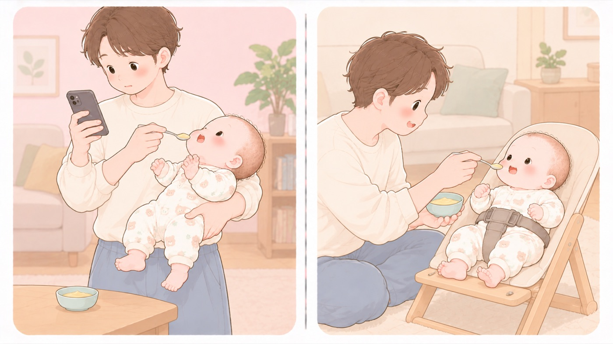

窒息を防ぐ
離乳食の開始と窒息
座らせて、飲み込んだのを確かめてから次の一口を入れる
食べものによる窒息は、離乳食を始めた時期から起こります。消費者庁は、小さな子どもの口の大きさを直径約4cmとし、のどはそれより細いため、口に入るものは何でも窒息や誤嚥食べものや飲みものが、食道ではなく気管のほうへ入ってしまうこと。の原因になりうるとしています。開始期にまず決めるのは、食べる姿勢と、そばにいることです。下の表にある食品は、形のあるものを食べはじめてから問題になるので、先に目を通しておきます。

左は危険な例、右は安全な例です。詰まりやすい食品の性質と、報告されている事例
| 丸くて、つるっとしたもの | そのままの形で気道に入ります。1歳5か月がカットしていないミニトマトで急に苦しくなり、泣くこともできなくなった事例、7か月が大粒のブドウの汁だけを与えようとして果肉ごと飲み込み、すぐに顔色が悪くなった事例があります。ミニトマトや大粒のブドウは4等分します。 |
|---|---|
| 粘着性が高いもの | のどに貼りつきます。パンが代表です。口の中で水分を吸うため、やわらかいから安全とはいえません。水分と一緒に、小さくちぎって与えます。 |
| かたくて、かみ切りにくいもの | 硬い豆やナッツ類は、5歳以下には食べさせません。小さく砕いても、気管に入れば肺炎や気管支炎を起こすことがあります。 |
- すること：上体を起こした姿勢で食べさせる
腰がすわる前は、背もたれを倒せるいすに寄りかからせて、頭と首を支えます。寝かせたまま、抱っこしたままは避けます。 - すること：開始期は、すりつぶして飲み込める状態にする
ポタージュ状からはじめ、舌でつぶせる固さ、歯ぐきでつぶせる固さへと上げます。前の固さで問題なく飲み込めてから、次に進みます。 - すること：食事のときは水分をとらせ、のどを湿らせる
乾いたものがのどに貼りつくのを防ぎます。 - しないこと：市販品の対象月齢を、そのまま信用しない
消費者庁は「市販品に表示されている対象月齢はあくまで目安です」としています。与える前に注意事項を読み、この子に与えてよいかを考えます。 - すること：食べている間はそばを離れない
詰まったとき、声を出せないことがあります。 - すること：飲み込んだのを確かめてから、次の一口を入れる
口の中に残っているうちに次を入れると、飲み込みきれないまま息を吸い込みます。スプーンを持つ手を止めて、口が空になるのを待ちます。 - しないこと：食べさせながら、あやして笑わせたり、驚かせたりしない
息を吸い込んだ拍子に、食べものが気管に入ります。 - しないこと：大人の食べものを味見させない
まだ歯がなく、噛みつぶせません。1歳5か月が保護者の食べていたおかきを食べてしまい、のどや気管に入った疑いで全身麻酔による内視鏡検査を受け、5日間入院した事例があります。手の届くところに大人の皿を置かないようにします。
パンでも詰まります
10か月の赤ちゃんが、カットパンを一つ丸々飲み込もうとして窒息し、救急搬送されたが死亡した事例が報告されています。 11か月で、ちぎったカットパンを食べさせたところ窒息した事例もあります。
ちぎってあっても起きています。 口の中で水分を吸って、のどに貼りつくためです。 食事のときは水分をとらせて、のどを湿らせてください。
🛍 グッズの選び方
PR- いすは背もたれを倒せて、腰がすわる前から使えるものだと、開始期から使えます。対象月齢の下限を必ず確かめます。「お座りができるようになってから」と書かれたものは、この時期には使えません。
- 股のあいだを通すベルトがあるものを選びます。腰がすわる前は、ベルトがないとおしりが前にずれて、体が沈みます。
- 足先が足置きに触れる高さだと、姿勢が安定します。
- 開始期はすりつぶした状態にするので、なめらかにできる調理器具があると続きます。
- コンビ ハイローチェア ネムリラ Fit AQ🏅 第18回キッズデザイン賞（同シリーズ ネムリラ コードレス AUTO SWING BEDi Long SS EG＋）Amazonで見る →
- カトージ スイングハイローラック ピッコロ 03417（新生児〜4歳頃）新生児から。手動で揺らすAmazonで見る →
- ブラウン ハンドブレンダー マルチクイック5離乳食の裏ごしをまとめて作れるAmazonで見る →
- コンビ ベビーレーベル お肉も切れるフードカッター（7か月頃〜）🏅 第9回キッズデザイン賞 審査委員長特別賞Amazonで見る →
- リッチェル サクッと切れる離乳食はさみ（ケース付）食器を傷つけない刃。皿の上で切れるAmazonで見る →
- GREEN BELL 匠の技 ベビー用フードカッター（ケース付き）ケース付き。持ち歩けるAmazonで見る →
リンクはAmazonアソシエイトリンクです。当サイトはアフィリエイトプログラムに参加しています。Amazonのアソシエイトとして、当サイトは適格販売により収入を得ています。 選び方の方針
この項目の根拠
- 子ども安全メール from 消費者庁 Vol.569「パン等による子どもの窒息や誤嚥に気を付けましょう！」（消費者庁）（新しいタブで開きます）
10か月がカットパンを一つ丸々飲み込もうとして窒息し救急搬送されたが死亡した事例、11か月がちぎったカットパンで窒息した事例。1歳5か月がカットしていないミニトマトで急に苦しくなり泣くこともできなかった事例、7か月が大粒のブドウの汁だけを与えようとして果肉ごと飲み込み顔色が悪くなった事例、1歳5か月が保護者の食べていたおかきを食べ気道異物の疑いで全身麻酔による内視鏡検査を受け5日間入院した事例。小さな子どもの口の大きさは直径約4cmで喉はそれよりも細く、口に入るものは何でも窒息や誤嚥の原因になりうること。粘着性が高いもの・丸いもの・つるっとしたもの・固くてかみ切りにくいものは特に注意が必要であること。食品に応じて小さくカットし柔らかく調理すること。市販品に表示されている対象月齢はあくまで目安であること。食事の際は水分をとり喉を湿らせること。姿勢を良くし食べることに集中させ、口に物を入れたまま走る・笑う・泣く・声を出すことを避けること。 - 食品による子どもの窒息・誤嚥(ごえん)事故に注意!―気管支炎や肺炎を起こすおそれも、硬い豆やナッツ類等は5歳以下の子どもには食べさせないで―（消費者庁）（新しいタブで開きます）
硬い豆やナッツ類等は5歳以下の子どもには食べさせないこと、気管支炎や肺炎を起こすおそれがあること。小さく砕いた場合でも気管に入りこんでしまうと肺炎や気管支炎になるリスクがあること。ミニトマトやブドウ等の球状の食品を丸ごと食べさせると窒息するリスクがあり、4等分する、調理して軟らかくすること。